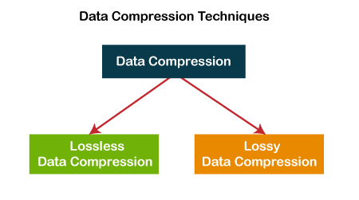

What is Data Compression?
In information theory (IT), data compression or source coding reduction is known as the the process of encoding information using fewer bits than the original representation. It enables sending a data object or file quickly over a network and in optimizing storage resources.
Invented?
With the advent of information theory in the late 1940s, modern data compression research got underway. In 1949, Claude Shannon and Robert Fano created a methodical methodology for allocating codewords based on block probability. David Huffman later discovered an ideal approach for doing this in 1951.
Types of Data Compression
Lossless
All of the original data is present as lossless form. The algorithm compresses the file while preserving the data necessary to restore it to its original size when decompressed. For files that would be significantly damaged or unable to function without all of the original data, a lossless format is required. These files contain software programmers, papers, and specific media types utilised by a variety of creators, including musicians, filmmakers, and photographers.
Example: PNG Compression
PNG (Portable Network Graphics) uses lossless compression, which means that the compressed image can be perfectly reconstructed from the compressed data.
- Color Space Conversion:
PNG typically converts the image from the RGB color space to the YCbCr color space. This conversion can be represented by a matrix operation:
⎡ Y ⎤ = ⎡ 0.299 0.587 0.114 ⎤ ⎡ R ⎤
⎢Cb⎥ = ⎢-0.1687 -0.3313 0.5 ⎥ ⎢G ⎥
⎣Cr⎦ = ⎣ 0.5 -0.4187 -0.0813 ⎦ ⎣ B ⎦
- Discrete Cosine Transform (DCT):
The DCT is applied to blocks of the image to transform spatial information into frequency information. This is done separately for each color component (Y, Cb, Cr) of the image. The DCT operation can be represented by the following equation:
#include <iostream>
#include <bits/stdc++.h>
using namespace std;
#define pi 3.142857
const int m = 8, n = 8;
// Function to find discrete cosine transform and print it
int dctTransform(int matrix[][n])
{
int i, j, k, l;
// dct will store the discrete cosine transform
float dct[m][n];
float ci, cj, dct1, sum;
for (i = 0; i < m; i++) {
for (j = 0; j < n; j++) {
// ci and cj depends on frequency as well as
// number of row and columns of specified matrix
if (i == 0)
ci = 1 / sqrt(m);
else
ci = sqrt(2) / sqrt(m);
if (j == 0)
cj = 1 / sqrt(n);
else
cj = sqrt(2) / sqrt(n);
// sum will temporarily store the sum of
// cosine signals
sum = 0;
for (k = 0; k < m; k++) {
for (l = 0; l < n; l++) {
dct1 = matrix[k][l] *
cos((2 * k + 1) * i * pi / (2 * m)) *
cos((2 * l + 1) * j * pi / (2 * n));
sum = sum + dct1;
}
}
dct[i][j] = ci * cj * sum;
}
}
for (i = 0; i < m; i++) {
for (j = 0; j < n; j++) {
printf("%f\t", dct[i][j]);
}
printf("\n");
}
}
// Driver code
int main()
{
int matrix[m][n] = { { 255, 255, 255, 255, 255, 255, 255, 255 },
{ 255, 255, 255, 255, 255, 255, 255, 255 },
{ 255, 255, 255, 255, 255, 255, 255, 255 },
{ 255, 255, 255, 255, 255, 255, 255, 255 },
{ 255, 255, 255, 255, 255, 255, 255, 255 },
{ 255, 255, 255, 255, 255, 255, 255, 255 },
{ 255, 255, 255, 255, 255, 255, 255, 255 },
{ 255, 255, 255, 255, 255, 255, 255, 255 } };
dctTransform(matrix);
return 0;
}
F(u,v) = 1/4 * C(u) * C(v) * ∑[x=0 to 7] ∑[y=0 to 7] f(x, y) * cos[(2x + 1)uπ/16] * cos[(2y + 1)vπ/16]
where F(u,v) represents the transformed coefficients, C(u) and C(v) are normalization factors, f(x,y) are the pixel intensities, and (u,v) represent the frequency domain.
- Color Space Conversion:
Lossy
Even further file size reduction is possible with lossy compression, although there will be a little information loss. For file types where missing information are barely noticeable, this format is appropriate. Media downloaded by the user, such as songs, videos, and photos, is included in these files. There is a slight drop in playback quality for these, but the user is unlikely to notice.

How Data Compression Work?
Depending on the kind of data you wish to compress, there are typically four different forms of compression. Which are:
Text
To reduce the size of text files, redundancies and patterns must be found in the content and encoded using shorter codes or symbols. The type of text and necessary compression ratio determines how well a compression algorithm works.Picture
Similar to text compression, picture compression looks for patterns and duplication in the file and shortens the codes and symbols. For instance, it might detect a pattern of colours that repeats itself and generate a code using the colour and the number of instances that equals one unit of the original.Audio
Audio files on computers allow you to listen to music, but they hardly ever include other kinds of information. Utilising lossy techniques, which eliminate both background noise and white noise from the files, is the main approach for compressing audio recordings.Video
A particular procedure is required to compress video files because they may also contain audio and image files. Videos employ both audio and image data, therefore background noise must be removed while preserving the most crucial portions of the movie using a combination of lossy techniques.